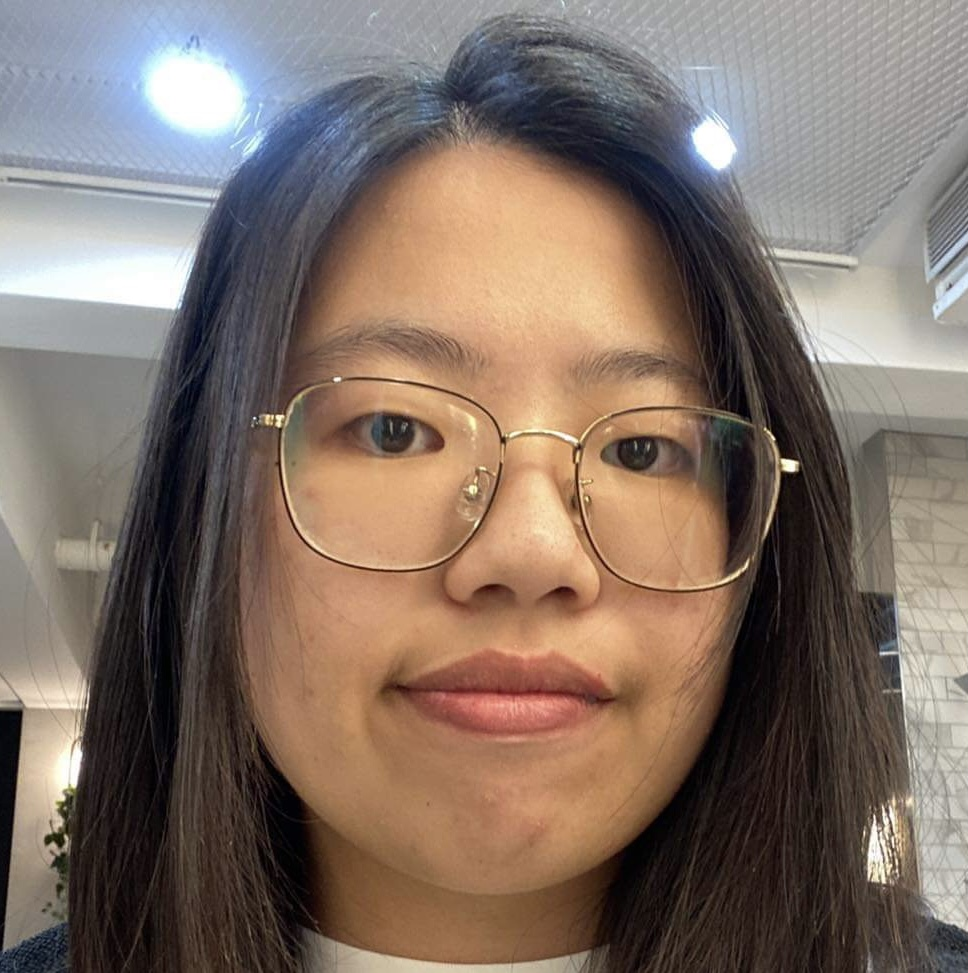
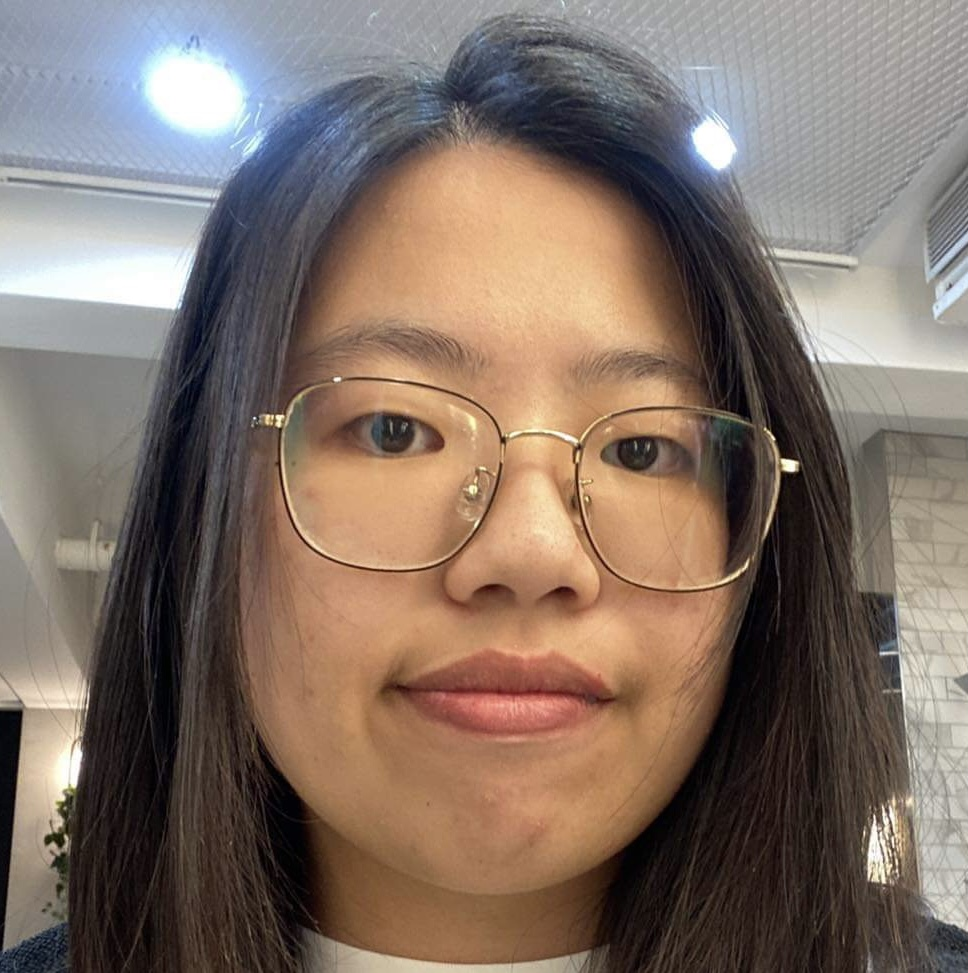
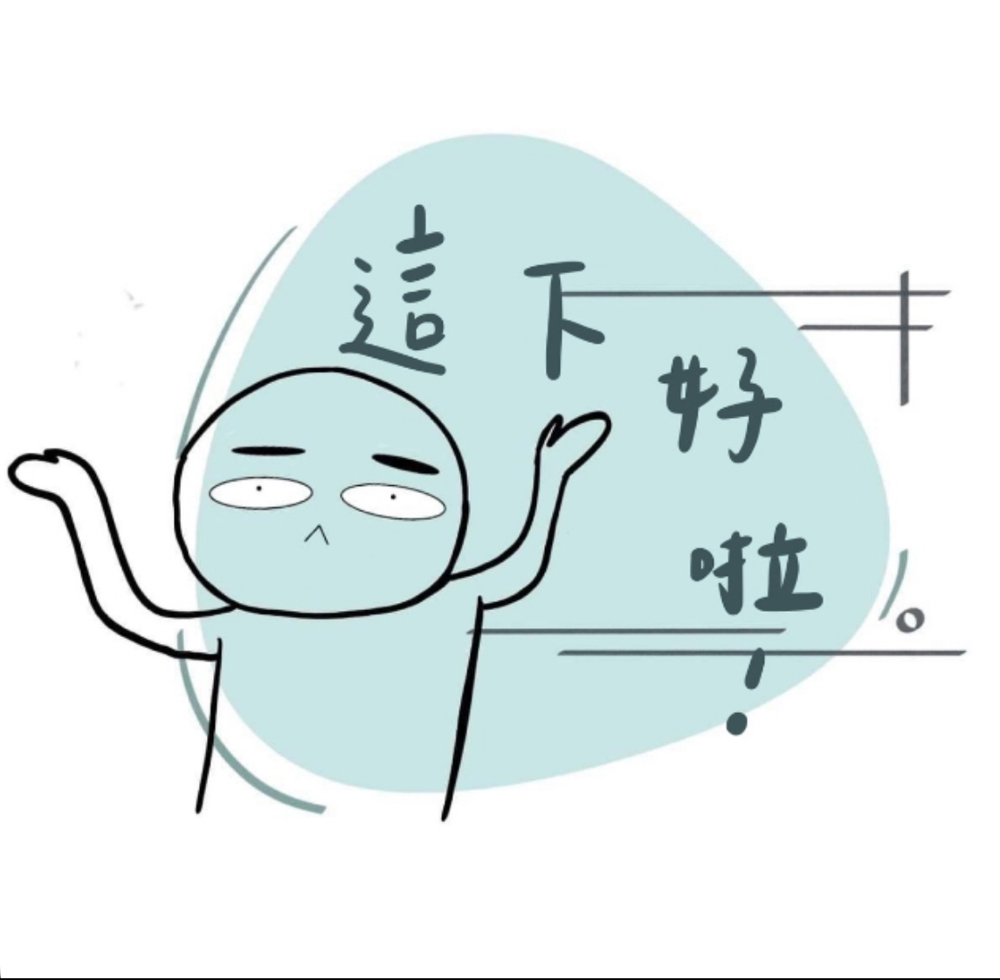
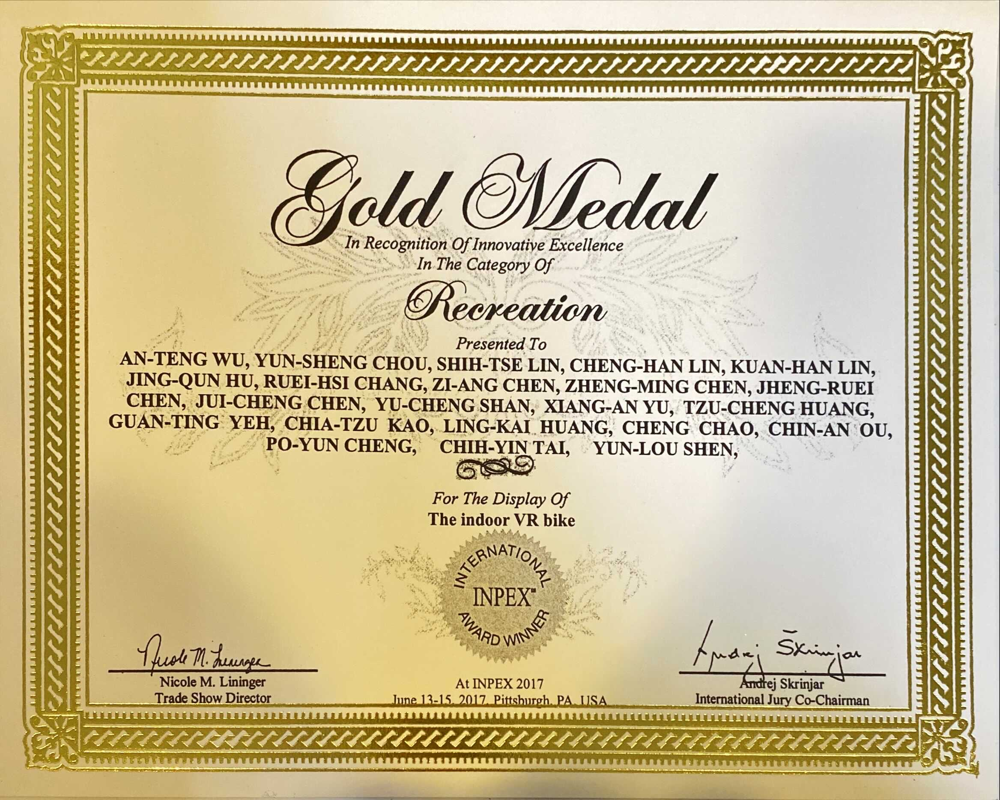
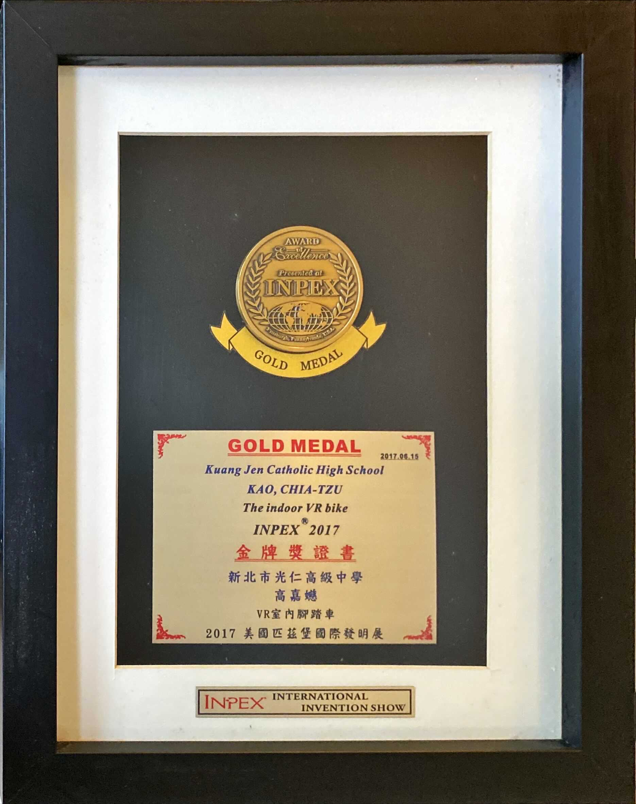
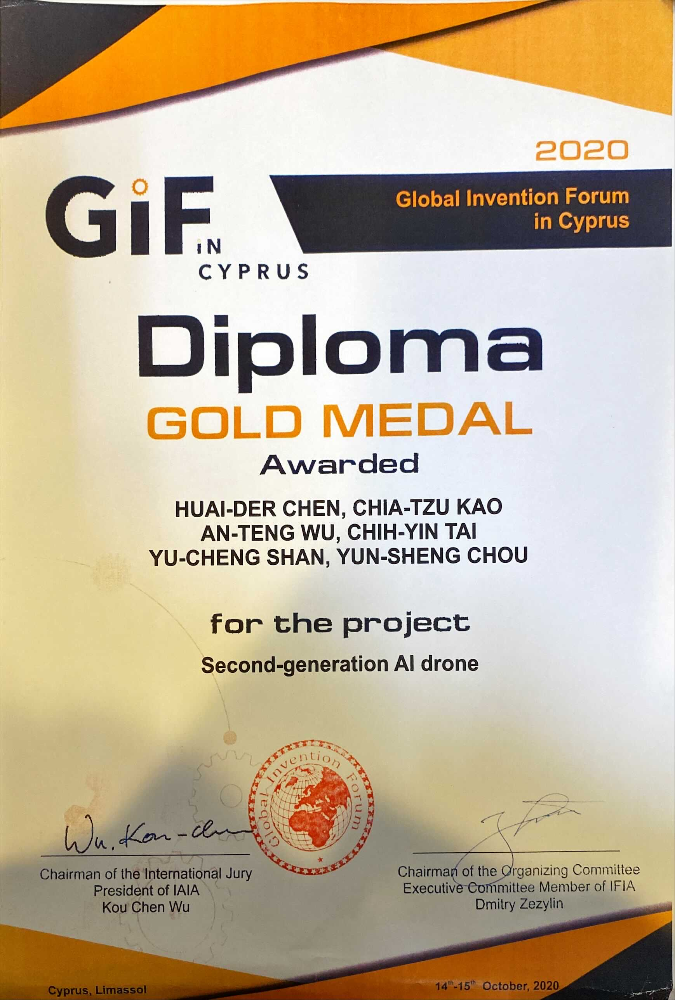
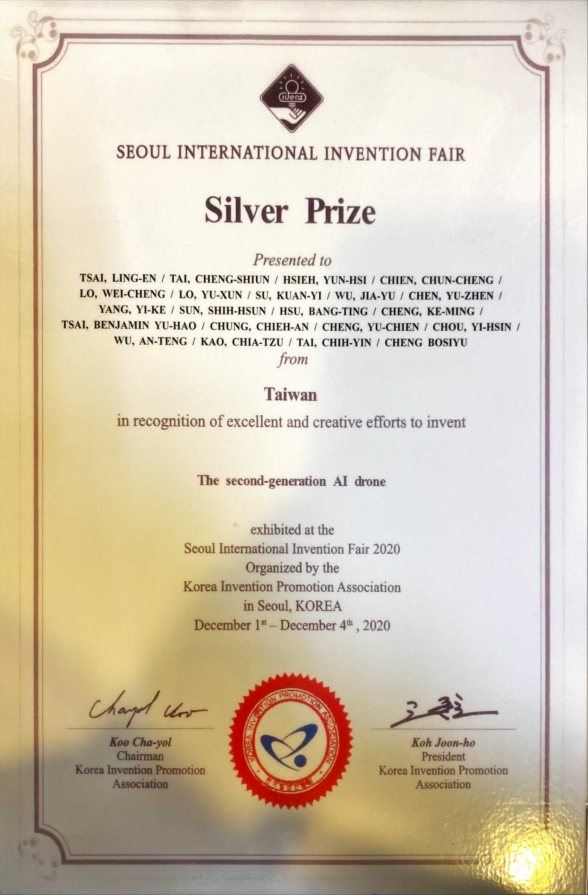
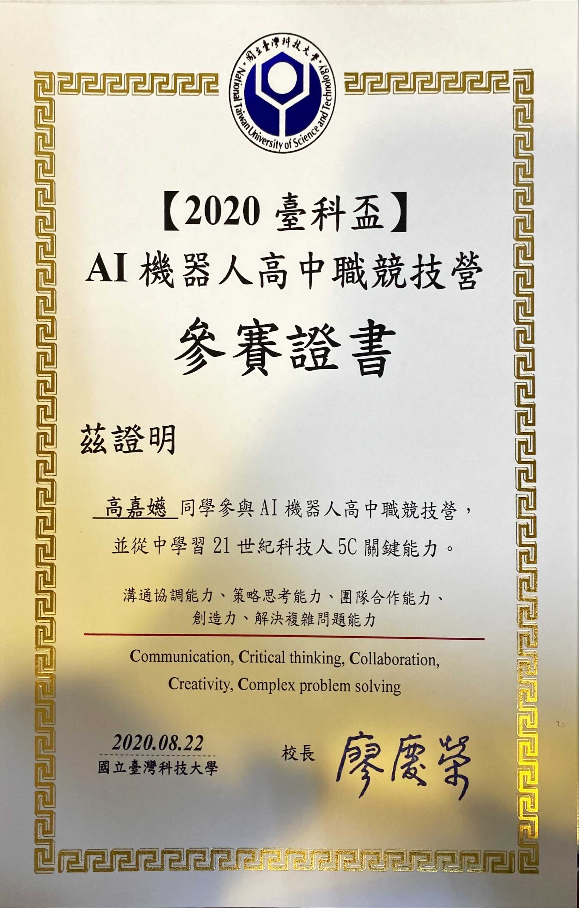
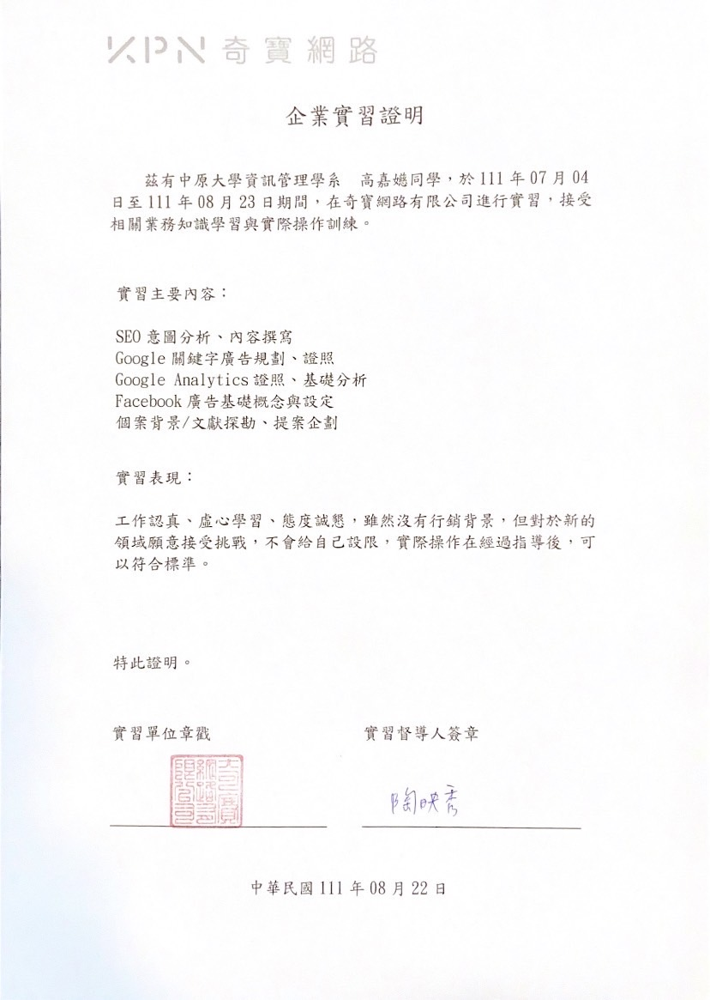

關於我 About me
 

Name : 高嘉嬨 Kao,ChiaTzu
Birthday : 2003/09/04
Gender : 女
Constellation:處女座
My Interests（Click me!!）
我喜歡閱讀小說（輕小說、推理小說等）
音樂：主要聽英文、日文、韓文歌曲
最喜歡看動漫，不只日本還有韓國、歐美等，都有涉略。
Me 最喜歡的名言「看動漫無國界」
專業技能
JAVA
Python
HTML/CSS
大學成果-大一上
大學成果-大一下
大一下:管理學
隊名：桃去哪裡呀!
販賣物品：水蜜桃
管理學成果影片
我的作業心得（CLICK ME!!!）
在這次的課程中，我們選擇服務的對象是復興鄉水蜜桃農民，而在服務的過程中我學到很多東西。學到的內容有與人聯絡的技巧，如何設計傳單、表單（訂購和滿意度），以及如何進行宣傳，和別人溝通。在設計完宣傳單後，我們開始向潛在客戶進行宣傳，其實我對於進入辦公室進行宣傳有點恐懼和害羞，但我秉持一個不開口怎麼會有開始的想法，把那些情緒丟到一旁，勇敢向對方進行宣傳，還好我們遇到老師們人都很熱情，或是很溫柔、耐心地聽我們講完，非常感謝他們願意聽我們講完。經過這段時間的服務後，我們去了解我們要販賣的產品、背景，而對我來說這全部的服務過程，都是一個很好的學習機會，其中我最喜歡的便是進行送貨的時候，尤其是當遇到那些很熱情的老師時，與他們相處都很愉快，他們在收到貨時也會很快樂地跟同事進行分享，看著他們不自覺得心情都愉悅起來了。
我學到許多我以前沒有學到的技能，而這次擔任組長，也讓我跟以前相比更有自信去處理、解決一件事，讓我自己的能力又上一層樓。
高中學習經歷

AI無人機課程證書：
高中社團時參與了AI無人機的課程，裡頭有教程式以及原理。


日內瓦發明展金牌—VR腳踏車
國中時在科學班時，用VR腳踏車為作品去參加比賽，構想是在室內騎車但卻可以透過眼鏡，讓你感覺身歷其境。


塞普勒斯發明展金牌、
韓國發明展銀牌—AI無人機：
高中社團以AI無人機為作品參加發明展比賽，我負責解說及演示的部分。

AI機器人競賽證書：
高中的課餘時間，與同學報名了2天的機器人競賽，第一天為構想和參觀現場及校區，第二天則是正式比賽。
上面是我高中時在社團以及在課餘時間參加的競賽所得到的獎。
因為國中時是科學發明班的原因，讓我高中時有幸可以以科學發明社的⼀員繼續參與相關
活動，並能夠參與到最新⼀項作品的研發。再繼續參與科學發明社的過程中，認識
了許許多多的⼈、事、物，也參與了許多活動，這些訓練了我與⼈的交際能⼒還有
讓我開始了解資訊這塊在做什麼。
實習經驗
暑假實習證明單
暑假實習時負責的案子
J-Love文案撰寫
成果（Click Logo!!!）
我的實習心得（CLICK ME!!!）
因為父母不想讓我在暑假時無所事事，所以我在升上大一的暑假期間我去我父母的公司進行實習。
這段時間我學到很多東西，還體會了職場生活。
一開始我覺得很麻煩，但在成功完成發配的任務後，感到滿滿的成就感。
同時我也進行了Google Ads學程的課程，並進行了線上證書考取，雖然失敗了幾次，但最後還是成功拿取！